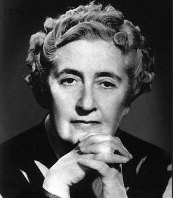

General
Dame Agatha Mary Clarissa Christie, Lady Mallowan, DBE (nee Miller; 15 September 1890 – 12 January 1976) was an English
writer known for her sixty-six detective novels and fourteen short story collections, particularly those revolving around
fictional detectives Hercule Poirot and Miss Marple. She also wrote the world's longest-running play, The Mousetrap, which
was performed in the West End from 1952 to 2020, as well as six novels under the pseudonym Mary Westmacott. In 1971, she was
made a Dame (DBE) for her contributions to literature. Guinness World Records lists Christie as the best-selling fiction
writer of all time, her novels having sold more than two billion copies.
Life
Christie was born into a wealthy upper-middle-class family in Torquay, Devon, and was largely home-schooled.
She was initially an unsuccessful writer with six consecutive rejections, but this changed in 1920 when The Mysterious Affair
at Styles, featuring detective Hercule Poirot, was published. Her first husband was Archibald Christie; they married in 1914
and had one child before divorcing in 1928. During both World Wars, she served in hospital dispensaries, acquiring a thorough
knowledge of the poisons which featured in many of her novels, short stories, and plays. Following her marriage to archaeologist
Max Mallowan in 1930, she spent several months each year on digs in the Middle East and used her first-hand knowledge of his
profession in her fiction.
|
 |